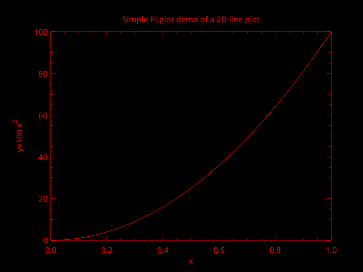

Introduction
PLplot is a software package for creating scientific plots . It is cross-platform ❤, which means it will work on Windows, Unix, and Linux system. The PLplot software is primarily licensed under the LGPL 🔥. It is written in C language, and it has bindings 🔗 for several other language including Fortran 🖥️ .
The PLplot core library can be used to create
- 💥standard x-y plots
- 🔥semi-log plots
- 🚀log-log plots
- 🌤contour plots
- 🌹3D surface plots
- 🌩mesh plots
- 🦁bar charts
- 🥧pie charts.
You can find more about PLPLOT ➡️🖱
Historical remark
A small history of PLPLOT taken from the official documentation is given below.
PLplot was originally developed by Sze Tan of the University of Auckland in Fortran-77. Many of the underlying concepts used in the PLplot package are based on ideas used in Tim Pearson’s PGPLOT package. Sze Tan writes:
I’m rather amazed how far PLPLOT has travelled given its origins etc. I first used PGPLOT on the Starlink VAX computers while I was a graduate student at the Mullard Radio Astronomy Observatory in Cambridge from 1983-1987. At the beginning of 1986, I was to give a seminar within the department at which I wanted to have a computer graphics demonstration on an IBM PC which was connected to a completely non-standard graphics card. Having about a week to do this and not having any drivers for the card, I started from the back end and designed PLPLOT to be such that one only needed to be able to draw a line or a dot on the screen in order to do arbitrary graphics. The application programmer’s interface was made as similar as possible to PGPLOT so that I could easily port my programs from the VAX to the PC. The kernel of PLPLOT was modelled on PGPLOT but the code is not derived from it.
The C version of PLplot was originally developed by Tony Richardson on a Commodore Amiga. That version has been improved and expanded ever since first by Geoffrey Furnish and Maurice Lebrun in the 1990’s and later (after the project was registered at SourceForge on 2000-02-23) with a much-expanded development team.
Installation of binary packages
Ubuntu 🍻
sudo apt-get install libplplot-dev libplplotfortran0MacOS 🍎
brew install plplotBuilding from source
Download the source code
git clone https://git.code.sf.net/p/plplot/plplot plplot-plplotI have also installed some extra libraries, which are given below.
libcairo-devlibglu1-mesa-devfreeglut3-devmesa-common-devpyqt5pyqt5-tools
sudo apt install libcairo-dev libglu1-mesa-dev freeglut3-dev mesa-common-dev
pip3 install pyqt5 pyqt5-toolsBuilding 🪛
After downloading the source code, run the following command inside of terminal
cd plplot-plplot
git branch $(whoami)
git checkout $(whoami)We will use -DCMAKE_INSTALL_PREFIX to specify the director wherein PLplot will be installed.
cmake -S ./ -B ./build DCMAKE_INSTALL_PREFIX=~/.easifem/extpkgs -G "Unix Makefiles"
cmake --build ./build --target all
cmake --build ./build --target installMy Configuration: In my case, I want to install PLplot in ~/.easifem/extpkgs. I have already set an environment variable export EASIFEM_EXTPKGS=~/.easifem/extpkgs, so I will use ${EASIFEM_EXTPKGS}, but you can specify the path explicitly.
-DCMAKE_INSTALL_PREFIX:PATH=~/.easifem/extpkgs-DCMAKE_BUILD_TYPE:STRING=Release, other option isDebug-DBUILD_SHARED_LIBS:BOOL=ON, setOFFif shared lib are not desired-DBUILD_TEST:BOOL=ON, setOFFyou dont want to build the tests-DENABLE_fortran:BOOL=ON, setOFF, if you dont want fortran bindings-DENABLE_lua:BOOL=ON, setOFFif you do not want Lua language bindings
cmake -S ./ -B ~/temp/easifem-extpkgs/plplot/build -G "Unix Makefiles" -DCMAKE_INSTALL_PREFIX=${EASIFEM_EXTPKGS} -DCMAKE_BUILD_TYPE:STRING=Release -DBUILD_SHARED_LIBS:BOOL=ON -DBUILD_TEST:BOOL=ON -DENABLE_fortran:BOOL=ON -DENABLE_lua:BOOL=ON
cmake --build ~/temp/easifem-extpkgs/plplot/build --target allNow you can go to $EASIFEM_EXTPKGS
├── bin
├── include/plplot
├── lib
├── man
└── shareContents of /bin 📁 is shown below
/bin
├── plserver
├── pltcl
└── pltekContents of /include/plplot 📁
├── csadll.h
├── csa.h
├── disptab.h
├── drivers.h
├── pdf.h
├── plConfig.h
├── pldebug.h
├── plDevs.h
├── pldll.h
├── plevent.h
├── plplot.h
├── plplotP.h
├── plstream.h
├── plstrm.h
├── pltcl.h
├── pltk.h
├── plxwd.h
├── qsastimedll.h
├── qsastime.h
├── qt.h
└── tclMatrix.hContents of /lib 📁
├── cmake
├── fortran
├── libcsirocsa.so -> libcsirocsa.so.0
├── libcsirocsa.so.0 -> libcsirocsa.so.0.0.1
├── libcsirocsa.so.0.0.1
├── libplfortrandemolib.a
├── libplplotcxx.so -> libplplotcxx.so.15
├── libplplotcxx.so.15 -> libplplotcxx.so.15.0.0
├── libplplotcxx.so.15.0.0
├── libplplotfortran.so -> libplplotfortran.so.0
├── libplplotfortran.so.0 -> libplplotfortran.so.0.2.0
├── libplplotfortran.so.0.2.0
├── libplplotqt.so -> libplplotqt.so.2
├── libplplotqt.so.2 -> libplplotqt.so.2.0.3
├── libplplotqt.so.2.0.3
├── libplplot.so -> libplplot.so.17
├── libplplot.so.17 -> libplplot.so.17.0.0
├── libplplot.so.17.0.0
├── libplplottcltk_Main.so -> libplplottcltk_Main.so.1
├── libplplottcltk_Main.so.1 -> libplplottcltk_Main.so.1.0.1
├── libplplottcltk_Main.so.1.0.1
├── libplplottcltk.so -> libplplottcltk.so.14
├── libplplottcltk.so.14 -> libplplottcltk.so.14.1.0
├── libplplottcltk.so.14.1.0
├── libqsastime.so -> libqsastime.so.0
├── libqsastime.so.0 -> libqsastime.so.0.0.1
├── libqsastime.so.0.0.1
├── libtclmatrix.so -> libtclmatrix.so.10
├── libtclmatrix.so.10 -> libtclmatrix.so.10.3.0
├── libtclmatrix.so.10.3.0
├── pkgconfig
└── plplot5.15.0
-plplot5.15.0
└── drivers
├── mem.driver_info
├── mem.so
├── ntk.driver_info
├── ntk.so
├── null.driver_info
├── null.so
├── ps.driver_info
├── ps.so
├── qt.driver_info
├── qt.so
├── svg.driver_info
├── svg.so
├── tk.driver_info
├── tk.so
├── tkwin.driver_info
├── tkwin.so
├── xfig.driver_info
├── xfig.so
├── xwin.driver_info
└── xwin.soThe lib/cmake directory 📁 contains files necessary for using PLplot with CMake. The contents of this directory are given below.
├── export_csirocsa.cmake
├── export_csirocsa-release.cmake
├── export_mem.cmake
├── export_mem-release.cmake
├── export_ntk.cmake
├── export_ntk-release.cmake
├── export_null.cmake
├── export_null-release.cmake
├── export_plfortrandemolib.cmake
├── export_plfortrandemolib-release.cmake
├── export_plplot.cmake
├── export_plplotcxx.cmake
├── export_plplotcxx-release.cmake
├── export_plplotfortran.cmake
├── export_plplotfortran-release.cmake
├── export_plplotqt.cmake
├── export_plplotqt-release.cmake
├── export_plplot-release.cmake
├── export_plplottcltk.cmake
├── export_plplottcltk_Main.cmake
├── export_plplottcltk_Main-release.cmake
├── export_plplottcltk-release.cmake
├── export_plserver.cmake
├── export_plserver-release.cmake
├── export_pltcl.cmake
├── export_pltcl-release.cmake
├── export_pltek.cmake
├── export_pltek-release.cmake
├── export_ps.cmake
├── export_ps-release.cmake
├── export_qsastime.cmake
├── export_qsastime-release.cmake
├── export_qt.cmake
├── export_qt-release.cmake
├── export_svg.cmake
├── export_svg-release.cmake
├── export_tclmatrix.cmake
├── export_tclmatrix-release.cmake
├── export_tk.cmake
├── export_tk-release.cmake
├── export_tkwin.cmake
├── export_tkwin-release.cmake
├── export_xfig.cmake
├── export_xfig-release.cmake
├── export_xwin.cmake
├── export_xwin-release.cmake
├── plplotConfig.cmake
├── plplotConfigVersion.cmake
└── plplot_exports.cmakeThe lib/pkgconfig directory contains files necessary for finding PLplot using pkgconfig in CMake projects. The contents of this directory are given below.
├── plplot-c++.pc
├── plplot-fortran.pc
├── plplot.pc
├── plplot-qt.pc
├── plplot-tcl_Main.pc
└── plplot-tcl.pcThe lib/fortran/modules/plplot directory contains Fortran module files as shown below.
├── plfortrandemolib.mod
├── plplot_double.mod
├── plplot_graphics.mod
├── plplot.mod
├── plplot_private_exposed.mod
├── plplot_private_utilities.mod
├── plplot_single.mod
└── plplot_types.modAfter a successful build open your .bashrc or .zshrc and add following lines to it
export PKG_CONFIG_PATH="${PKG_CONFIG_PATH}:${EASIFEM_EXTPKGS}/lib/pkgconfig"Note: You have to replace ${EASIFEM} with the PLplot installation path.
Subsequently, run the following command inside terminal.
source ~/.bashrc #if bash if default SHELLor
source ~/.zshrc #if ZSH is defaultRunning examples
Create a directory test 📁
mkdir test
cd test
curl -o PLplot_example_1.F90 https://api.cacher.io/raw/ae828dbdfa2aebf3af0a/403d8f4836d78bddc387/PLplot_example_1.F90
curl -o CMakeLists.txt https://api.cacher.io/raw/3ca8ef3a43180dba7f35/cbb8263d9026e996d6ca/PLplot_CMakeLists.txt
cmake -B ./build -DFILE_NAME:STRING="PLplot_example_1.F90"
cmake --build ./build
./build/testThe content of CMakeLists.txt is given below
CMAKE_MINIMUM_REQUIRED(VERSION 3.20.0 FATAL_ERROR)
SET(PROJECT_NAME "plplot")
PROJECT(${PROJECT_NAME})
ENABLE_LANGUAGE(Fortran C)
SET(TARGET_NAME "test")
SET(PLplot_INCLUDE_DIR "$ENV{EASIFEM_EXTPKGS}/lib/fortran/modules/plplot" )
SET(PLplot_LIBRARY "$ENV{EASIFEM_EXTPKGS}/lib/libplplot.so" )
SET(PLplot_Fortran_LIBRARY "$ENV{EASIFEM_EXTPKGS}/lib/libplplotfortran.so" )
OPTION(FILE_NAME "File name")
ADD_EXECUTABLE(${TARGET_NAME} ${FILE_NAME})
TARGET_LINK_LIBRARIES(
${TARGET_NAME}
${PLplot_LIBRARY}
${PLplot_Fortran_LIBRARY} )
TARGET_INCLUDE_DIRECTORIES( ${TARGET_NAME} PRIVATE ${PLplot_INCLUDE_DIR} )You should see the following result.

Example 0
PROGRAM main
USE easifemBase
IMPLICIT NONE
INTEGER, PARAMETER :: NSIZE = 101
REAL( DFP ), DIMENSION(NSIZE) :: x, y
REAL( DFP ) :: xmin = 0.0, xmax = 1.0, ymin = 0.0, ymax = 100.0
INTEGER :: ierr
! Prepare data to be plotted.
x = arange(0, NSIZE-1) / REAL(NSIZE-1, DFP)
y = ymax * x**2
! Parse and process command line arguments
ierr = PLPARSEOPTS( PL_PARSE_FULL )
IF(ierr .NE. 0) THEN
CALL Display( "plparseopts error" )
STOP
END IF
!> Initiate the PLPLOT enviroment
CALL PLINIT
! Create a labelled box to hold the plot.
! we have specified the box dimension
CALL PLENV( xmin, xmax, ymin, ymax, 0, 0 )
CALL PLLAB( "x", "y=100 x#u2#d", "Simple PLplot demo of a 2D line plot" )
! Plot the data that was prepared above.
CALL PLLINE( x, y )
! Close PLplot library
CALL PLEND
END PROGRAM mainPLINIT
This routine should be called before doing anything with PLPLOT. It is the main initialization routine for PLPLOT.
PLEND
Always call plend to close any output plot files and to free up resources.
PLSDEV
The output device can be a terminal, disk file, window system, pipe, or socket. If the output device has not already been specified when plinit is called, the output device will be taken from the value of the PLPLOT_DEV environment variable. If this variable is not set (or is empty), a list of valid output devices is given and the user is prompted for a choice.
The device can be specified BEFORE calling
plinitby:
CALL PLSDEV(STRING::devname)An ASCII character string containing the device name keyword of the required output device. If
devnameis NULL or if the first character of the string is a ``?’’, the normal (prompted) start up is used.
Following is the list of device name.
Plotting Options:
< 1> xwin X-Window (Xlib)
< 2> tk Tcl/TK Window
< 3> ps PostScript File (monochrome)
< 4> psc PostScript File (color)
< 5> xfig Fig file
< 6> null Null device
< 7> ntk New tk driver
< 8> tkwin New tk driver
< 9> mem User-supplied memory device
<10> wxwidgets wxWidgets Driver
<11> psttf PostScript File (monochrome)
<12> psttfc PostScript File (color)
<13> svg Scalable Vector Graphics (SVG 1.1)
<14> pdf Portable Document Format PDF
<15> bmpqt Qt Windows bitmap driver
<16> jpgqt Qt jpg driver
<17> pngqt Qt png driver
<18> ppmqt Qt ppm driver
<19> tiffqt Qt tiff driver
<20> svgqt Qt SVG driver
<21> qtwidget Qt Widget
<22> epsqt Qt EPS driver
<23> pdfqt Qt PDF driver
<24> extqt External Qt driver
<25> memqt Memory Qt driver
<26> xcairo Cairo X Windows Driver
<27> pdfcairo Cairo PDF Driver
<28> pscairo Cairo PS Driver
<29> epscairo Cairo EPS Driver
<30> svgcairo Cairo SVG Driver
<31> pngcairo Cairo PNG Driver
<32> memcairo Cairo Memory Driver
<33> extcairo Cairo External Context DriverI prefer one of the following
CALL PLSDEV("qtwidget")
CALL PLSDEV("xwin")
CALL PLSDEV("wxwidgets")PLENV
The function plenv is used to define the scales and axes for simple graphs.
PLLAB
The function pllab may be called after plenv to write labels on the x and y axes, and at the top of the graph.
PLPOIN
CALL PLPOIN(REAL::X(:),REAL::Y(:),INT::CODE)If
0 < code < 32, then Hershey symbols is plotted. If32 <= code <= 127the corresponding printable ASCII character is plotted.

PLSTRING
CALL PLSTRING(REAL::X(:),REAL::Y(:),STRING::STRING)Plot a glyph at the specified points. The glyph is specified with a PLplot user string.
## PLSYM
TO BE ADDED LATER.
## COLORS
- PLCOL0
- PLSCOL0
- PLCOLBG

Following example will print black on white
PROGRAM main
USE easifemBase
IMPLICIT NONE
INTEGER, PARAMETER :: NSIZE = 101
REAL( DFP ), DIMENSION(NSIZE) :: x, y
REAL( DFP ) :: xmin = 0.0, xmax = 1.0, ymin = 0.0, ymax = 100.0
INTEGER :: ierr
! Prepare data to be plotted.
x = arange(0, NSIZE-1) / REAL(NSIZE-1, DFP)
y = ymax * x**2
! Parse and process command line arguments
ierr = PLPARSEOPTS( PL_PARSE_FULL )
IF(ierr .NE. 0) THEN
CALL Display( "plparseopts error" )
STOP
END IF
!> Initiate the PLPLOT enviroment
CALL PLSDEV("qtwidget")
CALL PLSCOLBG(255,255,255)
CALL PLINIT
CALL PLSCOL0(0, 0,0,0)
CALL PLCOL0(0)
! COLOR
! Create a labelled box to hold the plot.
! we have specified the box dimension
CALL PLENV( xmin, xmax, ymin, ymax, 0, 0 )
CALL PLLAB( "x", "y=100 x#u2#d", "Simple PLplot demo of a 2D line plot" )
! Plot the data that was prepared above.
CALL PLPOIN( x, y, 4 )
! Close PLplot library
CALL PLEND
END PROGRAM main